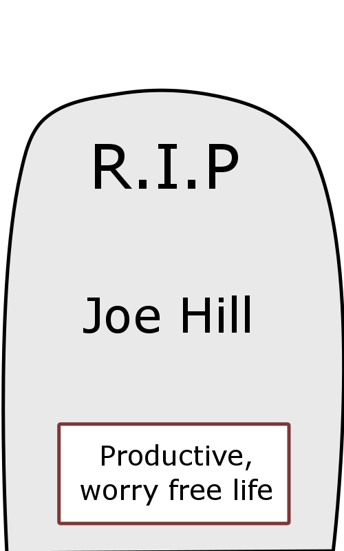

I set up a trello board, where I planned out all of the work that will need to be done and started collecting my thoughts on my story and presentation.
Apr.9.2017
Narrative Timeline of Influences
My theme is external motivation and the experience of work. Click on buttons to see some threads in my narrative.
 2.4 ChildrenSocietal Collapse
If a generation of people have no real problems to worry about, the society is theorized to collapse.
Appropriation Material
I came up with 20 ideas for appropriation material over the past week.
Monster Train, a story I've been meaning to tell about a train driver who wants to escape the darkness of his fully underground route.
High School and College Diplomas, these are exemplorary forms of external validation. Some strategic learners are even able to cost through life by focusing on doing things for these validations, rather than for the learning that they are validating. Some people need them, because they cannot get hired by employers who may or may not believe more in an applicant's external validations than the work that the applicant has demonstrated that they can do.
Musical numbers, such as follow the yellow brick road.
Responsibilities of Highly Skilled Workers, "With great power, comes great responsibility."
Awards, and other external validation.
Vacation Advertising, that shows people blissfully happy.
A homeless man on the train asked for some money to get a room at a hostel. He said that he had recently gotten a job, but another man on the train said that he had heard the first man state the same thing 6 weeks earlier.
A beggar at Hoyt - Schermorhorn likes to ask dramatically, "Would you kindly spare some change" with grandiose hand gestures.
Jesus Christ Superstar - good stories ask questions that speak to different sides of a conflict. The art conjures up the fundamental question, rather than providing fundamental answers.
Do the Right Thing, a movie by Spike Lee. Many of the current political conflicts surrounding work have to do with diversity, gender, and other issues external to the fundamental enjoyment of the work by those workers doing it.
Little Boxes, a song by Malvina Reynolds. This song is all about the implications of conformity. What would happen if everyone really did follow the path that they are presented with? Would it turn out alright? Would society be worse off for it?
Siddhartha, A Novel by Hermann Hesse that follows a protagonist who follows many different paths without finding full contentment. He later finds inner piece by synthesizing all of the roles that he has followed over the course of his life.
Originals: How Non-Conformists Move the World, a book by Adam Grant. I saw a woman on the train reading this book today. Books like these that are written with mainstream authors lead me to skepticism about whether they are really non-conformists, but it probably has interesting ideas within it. I have read a popular psychology book called Grit that Amazon evidently thinks is related to this book, because a finance professional I know gave it to me. It provided me with some grounded views of life that were useful to me, especially when I get too free-thinking.
Mind Reading, I think that a large part of our life experience is the separation of our minds. Conformity is achieved when people hide their inner desires from one another for survival, or just to aid in making their work experience more efficient. If we start reading each other's minds, will we be at peace with each other, or will the non-conformists be removed? Will our society maintain its entropy that pushes it past pareto improvement local minnimas?
Kino's Journey, an anime about societies. I especially like episode 5, which detail railway workers who are undoing each other's work, and a society where resources are distributed purely based on stress levels.
Tokaido, a game about enjoying the journey, rather than the destination. I've found that our goal oriented society doesn't allow us to apprecite certain life events, such as 3rd grade, along the way.
Protestors. I think that all of the current political protestors show both non-conformist behaviour against outdated notions of society that are coming back, while also rallying people around conformal banners, such as science, the environment, egalitarianism, etc. I think that protest may be an example of contemplation, or it may be an example of people expressing the modern views that they have had for years to begin with. Does society need individuals to contemplate or is it sufficient for diversity to happen at a more macroscopic level, where firm opinions fight in a capatalistic, survival of the fittest competition. I like to think that we change our view over time and that random pertubations are healthy.
A women that I learned about. She worked a single job for her entire career, was a big fan of tradition, loved having fixed yearly, weekly, and nightly routines, and had good relationships with the people in her life. I ponder regularity vs. spontenuity a lot. My schedules have led me towards efficiency in my past, but they have limited by social opportunities. Sponenuity creates a certain amout of fear of the unknown.
Substitute. I could substitute the Japanese Trading Route in Tokaido for a metephorical path through life, stopping at milestones along the way.
Combine. If the conformity expressed in Little Boxes were coupled with the Machine Learning Mind Reading, then we might find that the people's internal thoughts have conformed as well, that the people are really as similar as they appear, or that they never really formed much of an identity for themselves.
Adapt. I want to adapt the idea of "With great power, comes great responsibility" to if someone has reached a high proficiency in their subject using the limited educational resources availible, then they have a responsibility to apply those skills to genuinely hard problems.
Modify. Maybe I could take Spike Lee's "Do the right thing" and add a commentary on the external validation of an identity's representation in the media. In this way, the characters seek to create more external representation of themselves.
Put to another use. I was thinking of using Monster Train as either a horror story, or as an adventure story, but I think that it will work well as a fantasy within a worker's mind. I think that we all sometimes dream of other things while we go about our work, especially when the grass always seems greener on the other side of a mountain.
Eliminate. I think that the complex woman who is converned with repetition could be simplified to an Interactive Narrative experience, where a user goes through a simple work/sleep cycle repeatedly.
Reverse. I think that some of the songs such as Little Boxes, may be reversed into songs about the virtues of efficiency and staying on the path. I might even through in some sarcastic lyrics about how "pathos is for the masses, but logos never cries", therebye hinting at the perception that logical people lack emotion or that popular media does not serve a logical purpose.
Apr.17.2017
Object Prototyping Week 1
During the first week, I laser cut a prototype in the form of a life diploma. While actual life diplomas would detail the accomplishments of a single person's life, this prototype was meant to demonstrate several of the different branching paths that a person could take in their life. In this manner, my prototype served as a representation for both the life diploma objects and the story that I will be telling through an interactive narrative.
You can play the experience here. Note: the image links are broken online right now, but they work on my computer.
Here is a screenshot of the prototype, in case it doesn't work on the internet yet.